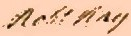

by
Stefan Bielinski
Robert Ray was a Manhattan-based businessman who came to Albany during the War for Independence.
The son of Richard and Eleanor Sanders Ray, he was born in 1713 and baptized in the New York City Dutch Reformed Church. His maternal great-grandfather and namesake was Albany entrepreneur Robert Sanders. At age fifty-five, Ray may have married (widow?) Belleta Dickenson in May 1763. The marriage produced no heirs and she was dead by 1784.
A one-time Revolutionary committee member in New York, he probably left Manhattan following the British invasion in July 1776. In August of that year, he was in Albany and among those appointed and paid for inventorying the effects of a dead Continental officer.
In 1779, he was listed on the city assessment rolls as the owner of two pieces of Albany property. Perhaps they came from the Sanders estate!
After the war, he was granted a bounty right as a member of the city regiment of the Albany County militia.
Robert Ray filed a will in March 1784. It stated that he was a resident of Albany. No wife or children were named but it did mention his nephew Cornelius Ray and niece, Cornelia Lansing - who were designated as heirs and co-executors. The will passed probate in October 1788.

notes
 Sources: The life of Robert Ray is CAP biography
number 6947. This profile is derived chiefly from community-based resources. We are grateful to Georgia Smith Murray for family-related material. Perhaps he was the
Robert Ray who traded on the Pennsylvania frontier during the 1730s!
Sources: The life of Robert Ray is CAP biography
number 6947. This profile is derived chiefly from community-based resources. We are grateful to Georgia Smith Murray for family-related material. Perhaps he was the
Robert Ray who traded on the Pennsylvania frontier during the 1730s!
first posted: 9/15/02; last revised 8/1/03